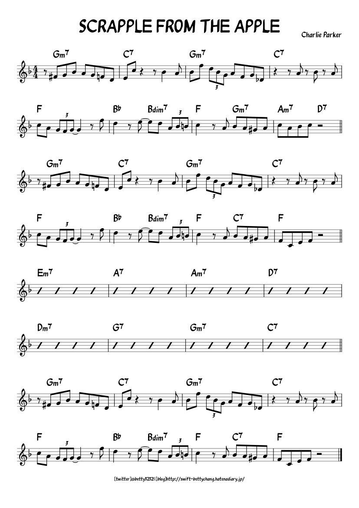

Improvising over tunes is the ability to express yourself through your instrument by playing notes.
To define what improvisation is, is quite difficult so we'll start with what a beginner might do to improvise over a tune.
Let's say that we're looking at our song again:
They know that it's in the key of 5* major but they're not too good at reading the changes, so they play notes within the 5* major scale when they're improvising.
This is fine, but there is a loss of information and the player is not aware of all the harmonic information that is occuring.
When you have the ability of what the changes are you can still use the key that the piece is in for reference but now you're able to know how the harmony is changing through the chord changes, with this information you might make lines which use notes from those chords or that don't, but the key thing is that you're actually aware of the underlying harmonic information so the choices you make are purposeful rather than accidental.
To sum up improvisation is the ability to consider what is happening at any moment and make new decisions which might be unexpected or expected and execute them. (what might differentiate us from machines)
One of the most prevalent ways to improvise is by using structure, one structure that we've already mentioned is playing notes which "follow" the changes. Another structure could be to take some intervallic pattern and move it through the changes so the notes match the changes, but the structure stays the same the whole time.
Another type of structure could be the lack of structure, so play notes which aren't expected or with odd rhythms, any idea that you have usually falls into a type of structure and being able to execute these ideas and come up with them is what will make you a good improviser.
Another situation which may arise is when there is no sheet music, but there are others playing music, or you're playing a song on your speaker. The question is how do we improvise in these types of situations.
Without access to what the next chord is (or even the current) we will have to use our ears to try to decipher what the harmonic information is. Let's say you're listening to a few people jamming and you join in, but no one tells you what the key is or the chords.
In this type of situation the best thing to do assume that the song is sitting in a major or minor key and then see if you can guess which one it is by listening. If you were not able to figure that out, then you can try playing some notes and see how they sound against what's being played, you'll be able to know when it's wrong or right, and with some experimentation you'll have hopefully found the songs key.
The good thing about most songs is that there is repetition involved, so the more times you play through it the more you'll start to pick up on more information, like the chords for example, and what the bassline is.
By using your ear and your instrument you'll probably have gotten enough information so that the information that would have been given to you on the sheet is now in your head and you can improvise.